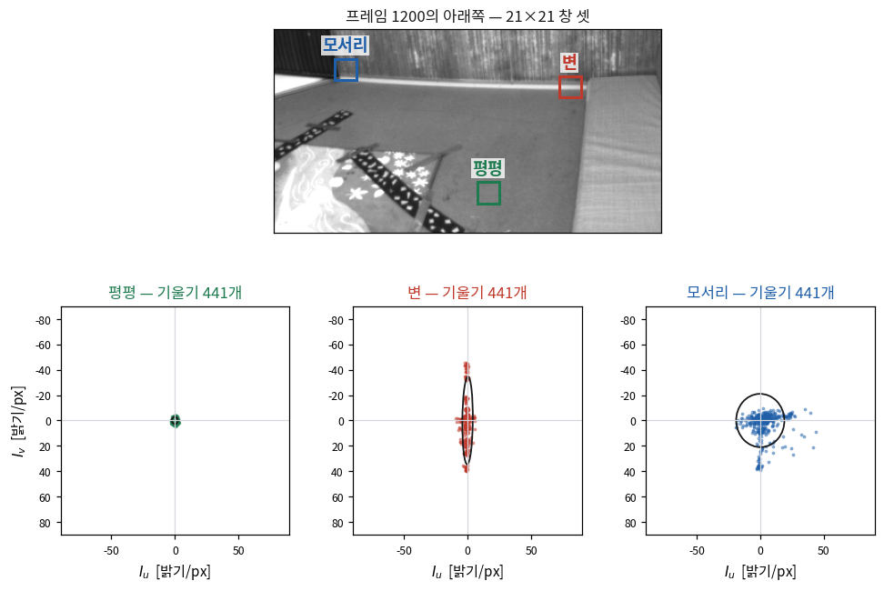
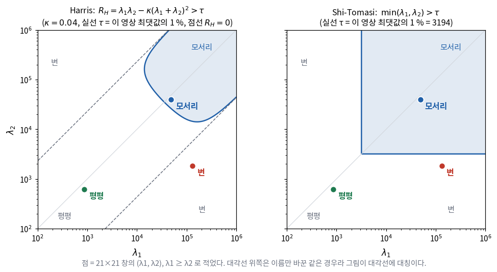
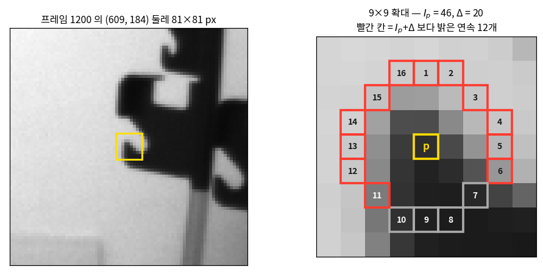
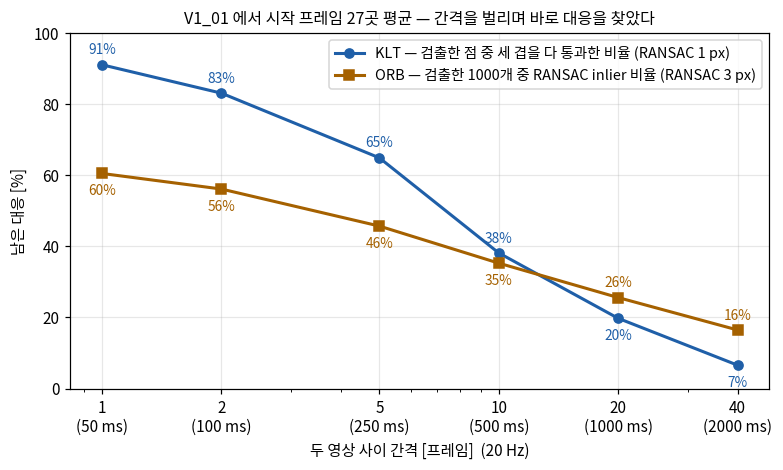
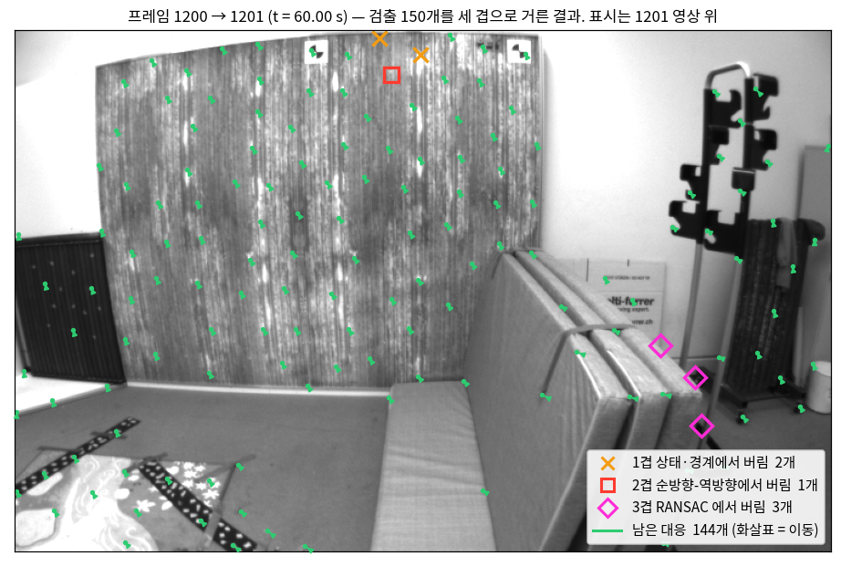
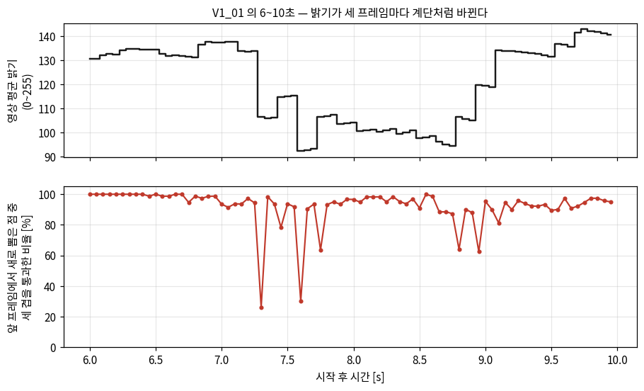
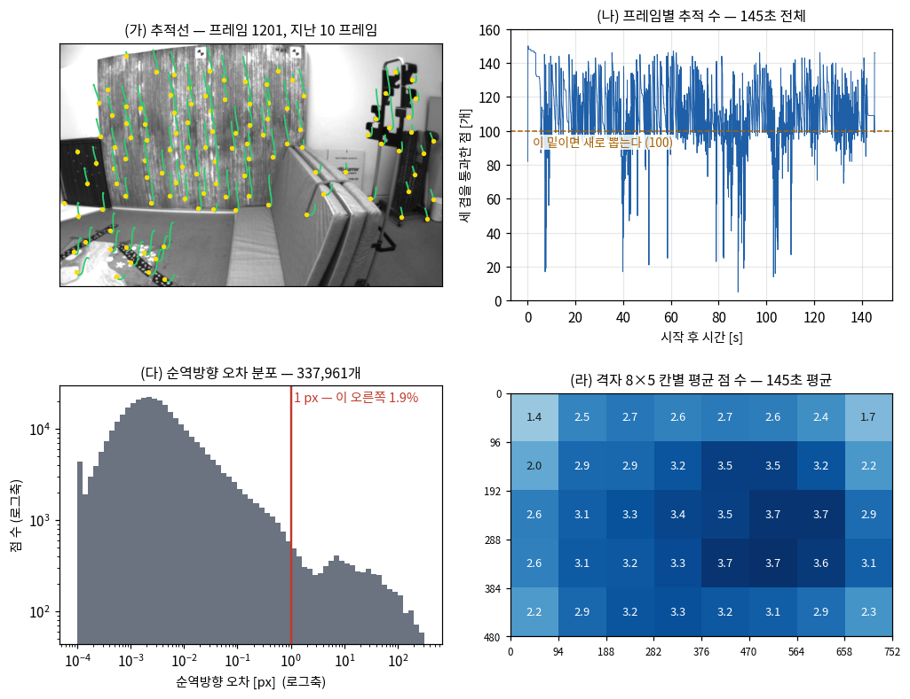

앞 영상의 점이 다음 영상 어디로 갔는지 따라가는 방법과
두 영상에서 따로 뽑은 점의 짝을 찾는 방법은 각각 무엇을 가정하나?
VINS-Mono와 ORB-SLAM은 왜 서로 다른 쪽을 골랐나?
틀린 대응점을 어떻게 걸러 내나? 왜 한 겹으로는 부족한가?
추적 수가 갑자기 20개 밑으로 떨어지는 프레임에서는 무슨 일이 일어나고 있나?
프론트엔드가 건강한지 무엇을 보고 판정하나?
5회는 「대응점이 주어졌다면」에서 출발했다.
두 영상에서 같은 3차원 점이 찍힌 픽셀 쌍이 있으면 \(E\)를 풀고 자세를 꺼내고 삼각측량까지 할 수 있었다.
그런데 그 대응점은 누가 만드나? 실제 영상에는 픽셀 36만 개가 있을 뿐
「이 픽셀과 저 픽셀이 같은 점이다」라는 표시는 어디에도 없다.
오늘은 그 표시를 만드는 일을 한다. EuRoC V1_01의 실제 영상 2,912장을 처음부터 끝까지 돌리고,
매 프레임 몇 개의 점이 어떤 이유로 살아남거나 버려지는지를 숫자로 본다.
오늘 자료의 숫자는 전부 그 실측에서 나왔다.
한 장 요약 — 대응점 하나가 만들어지기까지 학기 내내 본다
오늘 내내 예시 한 쌍을 따라간다 — V1_01의 프레임 1200 → 1201,
시작 후 60.00초 지점이다. 드론이 방 안에서 천천히 움직이는 평범한 구간이고,
점의 이동은 중앙값 3.69 px다. 아래 표의 오른쪽 열이 그 한 쌍에서 단계마다 남은 점의 수다.
점을 고른 뒤 세 겹으로 걸러 낸다.
절
단계
하는 일
예시 한 쌍
①②
검출 — Shi-Tomasi
다시 찾기 쉬운 점(모서리)을 고른다
150
③
추적 — KLT
그 점이 다음 영상 어디로 갔는지 따라간다
—
⑦
1겹 상태·경계 검사
KLT가 실패를 표시했거나 영상 밖으로 나간 점을 뺀다
148 버림 2
④
2겹 순방향-역방향 검사
거꾸로 따라가 제자리로 오는지 본다
147 버림 1
⑦
3겹 RANSAC(F)
5회의 에피폴라 제약에 안 맞는 대응을 뺀다
144버림 3
⑧
보충
100개 밑으로 떨어지면 빈 자리에서 새로 뽑는다
— 144라 안 뽑는다
해석: 이 한 쌍에서는 150개 중 6개(4 %)를 버렸다. 145초 전체로 넓히면
한 쌍에서 평균 6.0 %를 잃는다. 그런데 어떤 프레임에서는 80 % 넘게 한꺼번에 잃는다.
평균은 건강한데 가끔 무너지는 것 — 그 「가끔」이 어디서 오는지가 ⑨절이고,
그것을 한눈에 보이게 하는 것이 오늘 만드는 프론트엔드 계기판이다.
겹은 원래 넷인데, 넷째(IMU 예측)는 12회 이후에 붙인다(⑦절).
프론트엔드와 Tracker 인터페이스
SLAM 시스템은 보통 둘로 나눠 부른다. 오늘 만드는 것이 어느 쪽인지부터 정해 둔다.
🆕 프론트엔드와 백엔드
프론트엔드 (front-end)
센서 데이터에서 측정을 만드는 부분. 시각 SLAM에서는 영상에서
「특징 id \(j\)가 프레임 \(i\)의 픽셀 \(\mathbf{u}_{ij}\)에 보인다」는 목록을 만드는 일이다.
3차원도 자세도 모른다. 영상만 본다.
백엔드 (back-end)
프론트엔드가 만든 측정을 받아 자세와 3차원 점을 추정하는 부분. 9회의 번들조정,
11회의 필터, 13회의 슬라이딩 윈도우가 여기 들어간다.
백엔드가 아무리 정교해도 입력이 틀리면 틀린 답을 정교하게 낸다. 오늘이 그 입력을 만드는 날이다.
1회에서 이 강의에 「갈아 끼우는 자리」를 둔다고 했다. 그 표의 앞 두 줄
— 특징점 검출·기술과 대응점 찾기 — 이 오늘의 내용이다. 프로젝트에서는 이 자리를
Tracker라는 인터페이스 하나로 둔다(vision/tracker.hpp).
오늘 만드는 것은 그 구현 하나, KltTracker다.
// vision/tracker.hpp — 갈아 끼우는 자리
class Tracker {
public:
virtual ~Tracker() = default;
virtual void track(const ImageFrame&, std::vector<Observation>& out) = 0;
virtual int numTracked() const = 0;
};
// · KltTracker : Shi-Tomasi + KLT + 순방향-역방향 검사 (오늘)
// · PrecomputedTracker : 미리 뽑아 둔 학습 특징 파일을 읽는다 (⑩절, 옵션)
Observation 하나는 (특징 id, 픽셀 좌표) 한 쌍이다.
같은 3차원 점이면 프레임이 바뀌어도 id가 같다 — 이것이 「추적」의 뜻이고,
9회 번들조정이 받는 입력이 정확히 이 모양이다.
인터페이스로 둔 이유는 ⑩절에서 회수한다. 백엔드를 그대로 두고 프론트엔드만 바꿔 비교하려는 것이다.
\(I_u = \partial I/\partial u\), \(I_v = \partial I/\partial v\). 단위는 밝기/px.
실제로는 Sobel 필터(이웃 3×3 픽셀에 무게를 달리 준 차분)처럼 작은 필터로 이웃 픽셀의 차이를 재서 구한다.
\(\mathcal{W}\) — 창. 점 둘레의 픽셀 집합
오늘은 21×21 = 441픽셀을 쓴다. ③절의 KLT가 쓰는 창 크기다.
① 특징점과 구조 텐서
다음 영상에서 다시 찾을 수 있는 점은 어떤 점일까? 거꾸로 생각하면 쉽다.
창을 조금 옮겼는데 창 안의 내용이 거의 안 바뀌는 곳은 다시 찾을 수 없다.
옮긴 자리와 원래 자리가 구별되지 않기 때문이다. 하얀 벽 한가운데가 그렇고,
곧은 변 위의 한 점도 변을 따라 옮기는 방향으로는 그렇다.
그래서 「좋은 점」의 조건을 이렇게 세운다 — 창을 어느 방향으로 옮겨도 내용이 크게 바뀌는 점.
이것을 식으로 쓰면 구조 텐서가 나온다.
창을 \(\mathbf{d}\)만큼 옮겼을 때의 변화
점 \(\mathbf{u}_0\) 둘레의 창을 \(\mathbf{d}\)만큼 옮겼을 때, 창 안 픽셀마다 밝기 차이를 제곱해 더한다.
이 값을 \(S(\mathbf{d})\)라고 하자(차이의 제곱합, sum of squared differences). 스칼라이고 \(\mathbf{d}\)의 함수다.
스칼라의 제곱은 자기 자신과 자기 전치의 곱으로 쓸 수 있다 —
\((\nabla I^\top\mathbf{d})^2 = (\nabla I^\top\mathbf{d})^\top(\nabla I^\top\mathbf{d}) = \mathbf{d}^\top\nabla I\,\nabla I^\top\mathbf{d}\).
\(\mathbf{d}\)는 창 안 모든 픽셀에서 같으므로 합 밖으로 나온다.
이 2×2 행렬을 구조 텐서(structure tensor)라고 한다.
창을 어느 방향으로 옮기면 얼마나 변하는지가 이 행렬 하나에 다 들어 있다 —
\(S(\mathbf{d})\)를 알려면 이제 영상을 다시 볼 필요 없이 \(\mathbf{d}^\top M\mathbf{d}\)만 계산하면 된다.
구조 텐서의 고윳값
\(M\)은 대칭이므로 서로 수직인 고유벡터 두 개 \(\mathbf{e}_1, \mathbf{e}_2\)(각각 2×1, 길이 1)와
실수 고윳값 \(\lambda_1 \ge \lambda_2\)를 가진다. 옮기는 방향을 고유벡터 쪽으로 잡으면
\(S\)가 고윳값 하나로 정리된다. \(s\)는 옮긴 거리(스칼라, px)다.
$$
\mathbf{d} = s\,\mathbf{e}_1 \;\Rightarrow\; S \approx s^2\,\mathbf{e}_1^\top M\mathbf{e}_1 = s^2\lambda_1,
\qquad
\mathbf{d} = s\,\mathbf{e}_2 \;\Rightarrow\; S \approx s^2\lambda_2
$$
즉 \(\lambda_1\)은 가장 잘 변하는 방향의 변화량, \(\lambda_2\)는 가장 덜 변하는 방향의 변화량이다.
다른 방향은 모두 그 사이에 있다. 그러면 세 경우가 갈린다.
곳
\(\lambda_1\), \(\lambda_2\)
뜻
평평한 곳
둘 다 작다
어느 방향으로 옮겨도 안 변한다 — 다시 찾을 수 없다
변 위
\(\lambda_1\)만 크다
변을 가로지르면 변하고 변을 따라가면 안 변한다 — 한 방향으로만 찾을 수 있다
모서리
둘 다 크다
어느 방향으로 옮겨도 변한다 — 다시 찾을 수 있다
이것을 실제 영상에서 확인한다. 프레임 1200에서 평평한 바닥, 걸레받이의 가로 변, 판과 바닥이 만나는 모서리
세 곳에 21×21 창을 놓고, 창 안 441픽셀의 기울기 \((I_u, I_v)\)를 하나하나 점으로 찍었다.

기울기 441개의 구름. 평평은 원점에 뭉치고, 변(가로 변이라 \(I_v\)만 크다)은
한 방향으로 길게 늘어서고, 모서리는 두 방향으로 퍼진다.
검은 타원의 두 축이 \(M\)의 고유벡터 방향이고 축 길이가 \(\sqrt{\lambda/441}\)의 두 배다.
영상: EuRoC MAV Dataset, ETH Zürich ASL.
\(M\)은 이 구름의 퍼짐을 재는 행렬이다 — 기울기를 확률변수로 보면 \(M/441\)이 그 2차 모멘트다.
세 곳의 실제 값은 이렇다 (src/frontend_numbers.py의 table_eigen).
곳
\(M\) [(밝기/px)²]
\(\lambda_1\)
\(\lambda_2\)
\(\lambda_1/\lambda_2\)
평평
[621 22; 22 864]
866
619
1.4
변
[1868 −1194; −1194 131613]
131,624
1,857
70.9
모서리
[39654 356; 356 48591]
48,605
39,640
1.2
해석: 변은 \(\lambda_1\)이 셋 중 가장 크다. 「변화가 크다」만으로는 좋은 점이 아니라는 뜻이다.
변과 모서리를 가르는 것은 \(\lambda_2\)이고, 모서리의 \(\lambda_2\)가 변의 21배다.
평평한 바닥도 \(\lambda_1/\lambda_2 = 1.4\)로 「두 방향이 비슷하다」는 점에서는 모서리와 같지만
크기가 60분의 1 안팎이라 카메라 잡음에 묻힌다.
⚠️ 하얀 벽은 \(M = 0\)이다 — 포화된 픽셀
프레임 1200에서 밝기 255로 포화된 픽셀이 7.8 %다(오른쪽 위 흰 벽).
포화된 곳은 기울기가 정확히 0이라 \(M = 0\)이고, 거기서는 점이 하나도 뽑히지 않는다.
이 장면에서는 문제가 안 되지만, 영상이 밝아지면 포화 영역이 넓어져
점을 뽑을 자리 자체가 줄어들 수 있다.
구조 텐서의 성질
성질
왜
코드에서 쓰는 자리
대칭이고 \(\lambda_1, \lambda_2 \ge 0\)
\(\mathbf{d}^\top M\mathbf{d} = \sum(\nabla I^\top\mathbf{d})^2 \ge 0\)이므로 양의 준정부호다
음의 고윳값이 나오면 기울기 계산이 틀렸다
영상을 돌려도 고윳값은 그대로
영상을 2×2 회전 \(Q\)로 돌리면 기울기도 \(Q\nabla I\)로 돌아 \(M \to QMQ^\top\). 닮음변환이라 고윳값이 같다
카메라가 광축으로 돌아도 같은 점이 다시 뽑힌다
밝기를 \(a\)배 하면 \(M\)은 \(a^2\)배
기울기가 \(a\)배가 된다
문턱을 절대값이 아니라 그 영상 최댓값의 비율로 잡는 이유 (②절)
창 크기에 따라 달라진다
합하는 픽셀 수가 달라진다. 큰 구조는 큰 창에서만 모서리로 보인다
스케일이 바뀌면 같은 점이 안 뽑힐 수 있다 → ⑤절 ORB가 피라미드를 쓰는 이유
② Harris 코너와 Shi-Tomasi 코너 맡긴다
\(M\)을 계산했으면 「둘 다 크다」를 숫자 하나로 판정해야 한다. 두 가지 방식이 있다.
🆕 두 이름 — 둘 다 사람 이름이다
Harris 코너 — Chris Harris와 Mike Stephens, 1988
영국 Plessey 연구소의 두 연구자가 발표한 「A Combined Corner and Edge Detector」에서 나왔다.
3차원 복원을 위한 특징을 찾던 중이었다.
Shi-Tomasi 코너 — Jianbo Shi와 Carlo Tomasi, 1994
논문 제목이 「Good Features to Track」이다. OpenCV 함수 이름
goodFeaturesToTrack이 이 제목에서 왔다.
「추적하기 좋은 점」을 추적 방정식에서 거꾸로 정의했다는 것이 핵심이고, ③절에서 그 이유가 드러난다.
Harris 점수 — 고윳값을 구하지 않는 판정
2×2 행렬의 고윳값은 \(\det M = \lambda_1\lambda_2\), \(\operatorname{tr} M = \lambda_1 + \lambda_2\)로 묶인다.
Harris는 이 둘만으로 점수 \(R_H\)를 만들었다. \(\kappa\)는 0.04~0.06 사이의 상수다.
\(\lambda_1\lambda_2\)는 둘 다 커야 커지고, \(\kappa(\lambda_1+\lambda_2)^2\)는 하나만 커도 커진다.
그래서 변에서는 뒤 항이 이겨 \(R_H < 0\), 모서리에서는 앞 항이 이겨 \(R_H > 0\)이 된다.
제곱근을 쓰는 고윳값 계산을 피한 것이 1988년의 계산 환경에서 의미가 있었다.
표의 값과 같다. 두 판정을 \(\lambda_1\)–\(\lambda_2\) 평면에 그리면 차이가 보인다.

파란 영역이 「모서리로 인정」이다.
문턱 \(\tau\)는 둘 다 이 영상에서 그 점수의 최댓값의 1 %로 잡았다
(OpenCV qualityLevel = 0.01과 같은 규칙). 변은 두 판정 모두에서 떨어지고, 모서리는 둘 다 통과한다.
Shi-Tomasi의 경계는 \(\lambda_2 = 3194\)인 수평선 하나다.
해석: 결과는 대개 비슷하다. 차이는 점수의 뜻에 있다.
Harris의 \(R_H\)는 단위가 (밝기/px)⁴이고 \(\kappa\)에 따라 달라지는 비교용 숫자다.
Shi-Tomasi의 \(\lambda_2\)는 「가장 덜 변하는 방향으로 1 px 옮겼을 때 \(S\)가 얼마나 변하나」라는 물리적 뜻이 있고,
③절에서 보듯 추적 방정식이 얼마나 잘 풀리는지와 직접 같은 양이다. 이 강의가 Shi-Tomasi를 쓰는 이유다.
goodFeaturesToTrack
std::vector<cv::Point2f> pts;
cv::goodFeaturesToTrack(img, pts,
150, // maxCorners — 많아야 150개
0.01, // qualityLevel — 최댓값의 1 % 보다 큰 점만
30, // minDistance — 뽑힌 점끼리 30 px 이상 떨어지게
mask); // 0 인 픽셀에서는 뽑지 않는다 (⑧절)
함수가 안에서 하는 일은 네 단계다.
모든 픽셀에서 \(\lambda_2\)를 계산한다.
영상 전체 최댓값의 qualityLevel배보다 작은 픽셀을 버린다 — 문턱이 상대값이라
①절의 「밝기를 \(a\)배 하면 \(M\)은 \(a^2\)배」에 영향을 받지 않는다.
3×3 이웃 안에서 최대인 픽셀만 남긴다 (non-maximum suppression).
점수가 높은 순서로 하나씩 받아들이되, 이미 받은 점에서 minDistance 안에 있으면 건너뛴다.
예시 프레임 1200에서 150개를 뽑는 데 2.55 ms가 걸렸다(한 스레드, i7-12700K).
이 강의의 파라미터는 VINS-Mono의 EuRoC 설정(max_cnt: 150,
min_dist: 30)과 같다. VINS-Mono는 6회에서 본 단안 VIO 시스템(홍콩과기대, 2018)이고
코드가 공개되어 있어 이 강의가 여러 번 참조한다.
OpenCV의 기본 창은 3×3이고 KLT의 창은 21×21이다 — 괜찮은가
goodFeaturesToTrack의 blockSize 기본값은 3이다.
즉 검출은 3×3 창의 \(M\)으로, 추적은 21×21 창의 \(M\)(③절)으로 한다.
Shi와 Tomasi의 원래 제안은 추적에 쓰는 창과 같은 창으로 고르는 것이었다.
실제로는 3×3에서 모서리인 점이 21×21에서도 대개 모서리라 크게 어긋나지 않고, VINS-Mono도 기본값을 그대로 쓴다.
①절의 표는 추적과 같은 21×21 창으로 계산했다 — ③절과 같은 행렬을 보이기 위해서다.
blockSize를 키우면 더 큰 구조의 모서리를 고르게 되고, 검출 시간이 늘어난다.
③ KLT 광류 추적 맡기되 검사한다
점을 골랐다. 이제 그 점이 다음 영상의 어디로 갔는지 알아야 한다.
가장 직접적인 방법은 다음 영상에서 그 창과 가장 비슷한 창을 찾는 것이다.
온 영상을 뒤지면 느리니까, 원래 자리 근처에서 시작해 차이의 제곱합이 줄어드는 쪽으로 창을 조금씩 옮긴다.
그것이 KLT다.
🆕 광류와 KLT
광류 (optical flow)
영상 안의 각 점이 다음 영상까지 움직인 2차원 이동 \(\mathbf{d}\). 모든 픽셀에 대해 구하면 dense,
고른 점에 대해서만 구하면 sparse 광류다. 오늘은 sparse다.
Lucas-Kanade — Bruce Lucas와 Takeo Kanade, 1981
카네기멜런 대학의 두 연구자가 영상 정합 방법으로 발표했다. 아래 2×2 방정식이 그 논문에서 나왔다.
KLT — Kanade-Lucas-Tomasi
Tomasi와 Kanade가 1991년에 이 방법을 특징점 추적기로 정리했고,
1994년 Shi-Tomasi 논문이 「어떤 점을 고를지」를 붙였다. 세 사람의 머리글자를 딴 이름이다.
KLT의 세 가정
#
가정
식으로
깨지면
1
밝기 불변 — 같은 점은 다음 영상에서도 같은 밝기다
\(I_1(\mathbf{u}+\mathbf{d}) = I_0(\mathbf{u})\)
⑨절. 노출이 바뀌면 무너진다
2
창 안은 한 덩어리로 움직인다 — 21×21 안의 모든 픽셀이 같은 \(\mathbf{d}\)
한 번 풀면 \(\mathbf{d}\)가 정확하지는 않으므로(1차 근사였다), 창을 \(\mathbf{d}\)만큼 옮긴 자리에서
\(I_t\)를 다시 계산하고 또 푼다. OpenCV는 한 번에 고치는 양이 0.01 px보다 작아지거나 30번을 돌면 멈춘다(기본값).
여기서 \(\nabla I_1\)을 \(\nabla I_0\)로 바꿔 쓸 수 있다. 반복이 답에 가까워지면 다음 영상의 창 \(I_1(\mathbf{u}+\mathbf{d})\)이
가정 1에 따라 앞 영상의 창 \(I_0(\mathbf{u})\)과 같은 모양이 되므로 두 창의 기울기도 같아진다 —
\(\nabla I_1(\mathbf{u}+\mathbf{d}) \approx \nabla I_0(\mathbf{u})\)다. OpenCV는 실제로 \(\nabla I_0\)를 쓴다.
그러면 \(G\)는 반복마다 바뀌지 않으므로 처음에 한 번만 계산해 두면 된다.
$$
G = \sum_{\mathbf{u}\in\mathcal{W}} \nabla I_0\,\nabla I_0^\top
$$
이 \(G\)를 보자. ①절의 구조 텐서 \(M\)과 글자 하나 다르지 않다 —
점을 고를 때 본 바로 그 창의 행렬이다.
\(G\)의 조건과 모서리 선택
추적이 되려면 \(G\mathbf{d} = \mathbf{g}\)가 하나의 답으로 잘 풀려야 한다.
2×2 연립방정식이 잘 풀리는 조건은 \(G\)의 고윳값 두 개가 모두 충분히 큰 것이다.
곳
\(G\)의 고윳값
\(G\mathbf{d} = \mathbf{g}\)는
평평
둘 다 작다 (866, 619)
\(G\)가 0에 가까워 잡음 섞인 \(\mathbf{g}\)를 크게 키운다. 답이 아무 데나 간다
변
하나만 크다 (131,624, 1,857)
조건수 70.9. 변을 따라가는 성분은 거의 정해지지 않는다
모서리
둘 다 크다 (48,605, 39,640)
조건수 1.2. 두 성분이 모두 단단히 정해진다
🆕 aperture problem — 변 위의 점이 못 하는 것
창(구멍, aperture)으로 곧은 변만 보이면 변에 수직인 이동만 보이고 변을 따라가는 이동은 보이지 않는다.
변 위의 점에서 \(G\)의 작은 고윳값 쪽 고유벡터가 바로 그 「안 보이는 방향」이다.
이 현상을 aperture problem이라고 한다. 수식으로는 「\(G\)가 거의 특이하다」 한 줄이다.
해석: 이것이 오늘의 첫 질문에 대한 답이다.
모서리가 좋은 이유는 사람 눈에 띄어서가 아니라, 추적 방정식의 행렬이 잘 역행렬을 가지기 때문이다.
Shi-Tomasi의 점수 \(\lambda_2\)는 곧 \(G\)의 작은 고윳값이고, 그래서 그 논문 제목이 「Good Features to Track」이다.
검출 기준을 추적 방정식에서 거꾸로 정의했다.
영상 피라미드
가정 3은 실제로 얼마나 성립할까? V1_01 전 구간 2,911쌍에서 추적에 성공한 점(⑦절의 세 겹을 통과한 점)의 프레임 사이 이동을 쟀다.
중앙값
90 %
99 %
최대
4.89 px
11.89 px
17.76 px
44.1 px
21×21 창의 반지름은 10 px다. 테일러 1차 근사가 맞으려면 이동이 창 안의 기울기가 바뀌지 않을 만큼,
실제로는 몇 px 안쪽이어야 한다. 중앙값은 그 근처지만 위쪽 10 %는 넘어간다.
그래서 영상을 반씩 줄인 사본을 겹겹이 만든다. 이것을 영상 피라미드라 한다.
maxLevel = 3이면 원본(0층)과 1/2·1/4·1/8 크기의 사본 셋이 생긴다.
가장 작은 3층에서 먼저 푼다. 44 px 이동이 3층에서는 \(44/8 = 5.5\) px다 — 가정 3 안에 든다.
3층의 답을 두 배 해서 2층의 시작점으로 쓴다. 남은 오차만 2층에서 푼다.
1층, 0층까지 반복한다. 마지막 0층의 답이 원본 해상도의 \(\mathbf{d}\)다.
피라미드가 얼마나 필요한지는 정답을 아는 이동으로 재면 분명해진다.
프레임 1200을 정확히 정수 픽셀만큼 옮긴 영상을 만들면, 모든 점의 정답 위치를 안다.
옮기기 전후 모두 가장자리 30 px 안쪽인 점을 KLT로 따라가 위치 오차를 쟀다.
「status = 1」은 KLT가 「수렴했다」고 표시한 점이다.
이동 크기
피라미드
status = 1
그중 오차 < 0.1 px
그중 오차 > 1 px
3.6 px (3, −2)
없음 (0층만)
124 / 124
114
10
3층
124 / 124
124
0
9.4 px (8, −5)
없음
123 / 123
37
86
3층
123 / 123
123
0
23.9 px (20, −13)
없음
120 / 120
6
114
3층
116 / 120
115
1
해석: 피라미드 3층이면 24 px 이동도 거의 전부 0.1 px 안으로 맞춘다.
피라미드가 없으면 9.4 px만 옮겨도 123점 중 86점이 1 px 넘게 틀리는데,
그 86점 모두 status = 1이다.
KLT는 이동이 크면 「실패」라고 말하지 않고 틀린 곳에서 수렴한다.
이것이 ④절의 출발점이다.
OpenCV에서 쓰는 법과 반환값
std::vector<cv::Point2f> p1; // 다음 영상에서의 위치 (서브픽셀)
std::vector<uchar> status; // 1 = 수렴했다, 0 = 실패
std::vector<float> err; // 창의 밝기 차이 (L1 / 픽셀 수) — 픽셀 거리가 아니다
cv::calcOpticalFlowPyrLK(img0, img1, p0, p1, status, err,
cv::Size(21, 21), 3); // 창 21×21, 피라미드 3층
예시 한 쌍에서 150점을 이렇게 한 번 추적하는 데 1.26 ms가 걸렸다.
칸
KLT에서
무엇을 담나
점마다 이동 \(\mathbf{d}\) 두 숫자. 결과 좌표는 서브픽셀 실수다
어떤 성질이 있나
창이 모서리일 때만 잘 풀린다(\(G\)). 밝기 불변·작은 이동을 가정한다. 틀려도 status = 1을 줄 수 있다
실제로 쓰는 법
위 호출 + ④절 순방향-역방향 검사 + ⑦절 RANSAC. status만 믿지 않는다
다른 것과 오가는 법
결과는 왜곡된 원본 영상의 픽셀이다. 5회의 \(E\)·\(F\)에 넣기 전에 4회의 undistortPoints로 편다
④ 순방향-역방향 검사 맡기되 검사한다
KLT가 status = 1을 줬다면 그 결과를 믿어도 될까?
③절의 실험이 답했다 — status는 「반복이 수렴했다」는 뜻이지 「맞는 곳에 갔다」는 뜻이 아니다.
KLT는 차이의 제곱합이 근처에서 가장 작은 곳으로 간다. 그곳이 틀린 곳이어도 수렴은 한다.
그래서 되돌아 와 본다. 다음 영상의 결과 \(\mathbf{u}_1\)에서 출발해
거꾸로 앞 영상으로 추적하면 \(\hat{\mathbf{u}}_0\)가 나온다. 맞게 갔다면 제자리로 와야 한다.
예시 한 쌍(1200 → 1201)에서 이 함수를 C++로 돌린 출력이다 (src/frontend_cpp/).
검출 150 → 순방향-역방향 통과 147
150개 중 1개는 KLT가 스스로 실패를 표시했고, 2개는 status = 1인데 되돌아오니
23.83 px, 9.37 px 떨어진 곳에 왔다. 둘 다 영상 위쪽 가장자리 근처(\(v\) = 22, 40)의 점이다.
23.83 px짜리는 결과 위치가 영상 밖이라 ⑦절의 1겹(경계 검사)에서도 걸린다.
9.37 px짜리는 이 검사가 아니었으면 그대로 백엔드로 갔다.
오차 분포와 임계값
V1_01 전 구간에서 KLT가 양쪽 다 status = 1을 준 점 337,961개의 순방향-역방향 오차를 모았다.
중앙값
90 %
95 %
99 %
0.5 px 초과
1 px 초과
0.003 px
0.038 px
0.138 px
8.29 px
2.62 %
1.94 %
분포가 두 덩어리다. 로그축 히스토그램으로 그리면 0.003 px 근처에 큰 봉우리가 있고,
전체의 2 % 가까이가 수 px~수십 px에 작은 봉우리로 따로 떠 있다. 95 %와 99 % 사이에서 값이 60배 뛰는 것이 그 표시다.
임계값은 두 덩어리 사이의 골짜기에 놓으면 된다 — 0.5 px든 1 px든 걸러지는 비율 차이가 0.7 %p에 그친다.
같은 시퀀스를 피라미드 없이 돌리면 1 px을 넘는 점이 1.94 %에서 15.3 %로 는다.
③절의 합성 실험에서 본 「status = 1인데 틀린 점」이 실제 데이터에서 그만큼 생기고,
이 검사가 그것을 거른다.
해석: 임계값은 이렇게 분포를 그려 보고 정하는 것이다.
VINS-Mono(2018)에는 이 검사가 없었고, 같은 연구실의 후속작 VINS-Fusion(2019)에
flow_back 옵션으로 들어갔다. 그쪽 기준은 0.5 px다.
이 강의는 1 px를 쓴다. 어느 쪽이든 왜 그 값인지를 분포로 말할 수 있으면 된다.
순방향-역방향 검사와 RANSAC의 역할 분담
뒤에서 5회의 RANSAC으로 한 번 더 거른다(⑦절). 그러면 순방향-역방향 검사는 빼도 되지 않을까?
전 구간을 순방향-역방향 검사 없이 다시 돌려, RANSAC까지 통과해 끝까지 살아남은 점 중
순방향-역방향 오차가 1 px 이상인 점을 셌다.
검사 켬
검사 끔
RANSAC까지 통과한 점 중 순방향-역방향 오차 ≥ 1 px
0개
2,246개 (남은 점의 0.69 %)
그런 점이 하나라도 섞인 프레임
0 %
32.9 %
RANSAC inlier 비율 최저
0.744
0.208
남은 점의 프레임 사이 이동 최대
44.1 px
330.0 px
해석: RANSAC이 못 잡는 것이 있다. 5회의 에피폴라 제약은 「대응점이 에피폴라 선 위에 있나」만 본다.
점이 선을 따라 틀린 곳으로 미끄러지면 제약을 만족한다 — 깊이만 틀린 점처럼 보이기 때문이다.
순방향-역방향 검사는 기하를 모르고 영상만으로 판정하므로 그런 점도 잡는다.
두 검사는 서로 다른 것을 본다. 하나가 다른 하나를 대신하지 않는다.
⚠️ 순방향-역방향을 통과해도 틀릴 수 있다
앞으로 갈 때와 돌아올 때 똑같이 틀리면 통과한다. 다음 영상의 밝기가 한꺼번에 바뀌는 경우가 그렇고,
⑨절에서 실험으로 본다. 이 검사는 틀린 점을 크게 줄이지만, 맞는 점만 남긴다는 보증은 아니다.
⑤ FAST·ORB와 기술자 매칭 맡긴다
KLT는 앞 영상의 점을 들고 가서 다음 영상에서 찾는다. 다른 방법도 있다.
두 영상에서 점을 각각 따로 뽑고, 점마다 주변 모양을 숫자 묶음으로 요약해 둔 뒤,
그 숫자 묶음이 가장 비슷한 것끼리 짝짓는다. 이 숫자 묶음을 기술자(descriptor)라고 한다.
이 방식의 검출기와 기술자는 SIFT(2004) → SURF(2006) → FAST(2006) → BRIEF(2010) → ORB(2011) 순으로 발전했다.
SIFT와 SURF는 「조금 더 알아두면」으로 내리고, 여기서는 ORB-SLAM이 쓰는 ORB를 끝까지 본다.
🆕 이 절의 이름들
FAST — Edward Rosten과 Tom Drummond, 2006 (케임브리지 대학)
Features from Accelerated Segment Test. 밝기 비교만으로 모서리를 빠르게 찾는 검출기.
BRIEF — Michael Calonder 외, 2010 (EPFL)
Binary Robust Independent Elementary Features. 0과 1로만 된 기술자.
ORB — Ethan Rublee 외, 2011 (Willow Garage)
Oriented FAST and Rotated BRIEF. Willow Garage는 ROS를 만든 미국 회사다.
특허가 걸려 있던 SIFT·SURF의 무료 대안으로 나왔고, 6회에서 본 ORB-SLAM(사라고사 대학, 2015)이
추적부터 재인식까지 이 특징 하나로 해내면서 이름이 널리 알려졌다.
Hamming 거리 — Richard Hamming, 1950
두 이진 문자열에서 다른 비트의 개수. 벨 연구소의 Hamming이 오류 정정 부호를 만들며 정의했다.
FAST
후보 픽셀 \(p\)의 밝기를 \(I_p\), 문턱을 \(\Delta\)라 하자. \(p\) 둘레 반지름 3 px 원 위의 16픽셀 중
\(I_p + \Delta\)보다 밝은 픽셀이 연속 \(n\)개 있거나 \(I_p - \Delta\)보다 어두운 픽셀이 연속 \(n\)개 있으면 모서리다.
OpenCV 기본은 \(n = 9\)다(FAST-9). 곱셈이 하나도 없다 — 그래서 빠르다.

프레임 1200에서 FAST가 실제로 잡은 점 하나(\(\Delta = 20\)). 가운데 \(p\)는 어두운 갈고리 끝이고(\(I_p = 46\)),
원 위 16픽셀 중 위쪽과 양옆 12개가 \(I_p + \Delta = 66\)보다 밝다. 아래쪽은 갈고리 몸통이라 비슷하게 어둡다.
영상: EuRoC MAV Dataset, ETH Zürich ASL.
FAST의 점수는 거칠어서, ORB는 FAST로 후보를 넉넉히 뽑은 뒤 ②절의 Harris 점수로 순위를 매겨 위에서부터 고른다.
이 영상 한 장에서 FAST(\(\Delta = 20\))가 잡은 점은 2,321개였다.
ORB — 방향과 크기
FAST 점에는 방향도 크기도 없다. 그대로 기술자를 만들면 카메라가 돌거나 다가가면 같은 점의 기술자가 달라진다.
ORB는 두 가지를 더한다.
① 크기 — 피라미드. 원본을 포함해 1.2배씩 줄인 8층에서 각각 FAST를 돌린다(③절의 KLT 피라미드는
2배씩 줄인다). 큰 구조는 작은 층에서 모서리로 잡힌다.
② 방향 — 밝기 무게중심. 점 둘레 원형 패치에서 밝기를 무게로 보고 무게중심을 구한다.
\(m_{pq}\)는 스칼라 모멘트이고, 좌표 \((u, v)\)는 점을 원점으로 둔 상대 좌표다.
256비트 = 32바이트가 기술자 하나다. ORB는 이 쌍들을 \(\theta\)만큼 돌려서 비교한다(steered BRIEF).
돌리고 나면 비트끼리 상관이 생기고 비트마다 0·1이 반반으로 나오지 않게 되어 정보가 줄어든다.
그래서 ORB는 학습 영상에서 후보 쌍을 평균이 0.5에 가까운 순서로 늘어놓고,
이미 고른 쌍들과의 상관이 낮은 것만 차례로 받아 256쌍을 채웠다. 그렇게 고른 쌍으로 만든 기술자가 rBRIEF다.
Hamming 거리, cross check, ratio test
두 기술자의 거리는 XOR 한 뒤 1인 비트를 센 것, 즉 Hamming 거리다.
XOR와 비트 세기(popcount)는 CPU가 명령 하나씩으로 하므로 실수 벡터의 거리보다 훨씬 싸다.
거리 0이면 똑같고 256이면 정반대다. 가장 가까운 것을 짝으로 고르는데, 그대로 두면 틀린 짝이 많아 두 가지 거름을 쓴다.
거름
하는 일
cross check
A의 최근접이 B이고 B의 최근접도 A일 때만 짝으로 인정한다
ratio test
최근접 거리 \(h_1\)과 둘째 거리 \(h_2\)를 비교해 \(h_1 < 0.8\,h_2\)일 때만 인정한다.
「확실히 이것」이 아니면 버린다. David Lowe(브리티시컬럼비아 대학)가 SIFT 논문(2004)에서 제안했다
예시 한 쌍(1200 → 1201)에서 ORB 1000개씩을 뽑아 짝지은 결과다.
짝 수
시간
RANSAC(1 px) 뒤
검출 + 기술자
1000 / 1000
4.86 ms (한 장)
cross check
794
10.79 ms
537 (67.6 %)
ratio test (0.8)
816
5.62 ms
546 (66.9 %)
짝의 Hamming 거리는 중앙값 18비트(256비트 중), 90 %가 34비트 이하였다.
그런데 RANSAC 1 px 기준을 통과한 것이 3분의 2뿐이다. 틀린 짝이 3분의 1이라는 뜻일까?
같은 794쌍에 기준만 바꿔 RANSAC을 다시 걸었다.
RANSAC 기준
1 px
2 px
3 px
5 px
inlier
67.6 %
89.8 %
94.1 %
98.6 %
원본 층(0층)에서 잡힌 점만
79.8 %
96.1 %
97.8 %
100 %
3층 이상(1/1.7 이하로 줄인 영상)에서 잡힌 점만
53.3 %
84.6 %
89.7 %
97.2 %
해석: 기준을 3 px로 풀면 94 %가 통과한다. 틀린 짝이 많은 것이 아니라
ORB 점의 위치가 덜 정밀한 것으로 보인다. 특히 줄인 영상에서 잡힌 점은
그 층의 픽셀 격자에서 위치가 정해져 원본 기준으로 1 px 넘게 흔들린다.
KLT 결과는 서브픽셀로 반복 정제된 위치다. 같은 1 px 기준이 두 방식에 같은 뜻이 아니다 —
ORB-SLAM이 기하 검사의 허용 오차를 점이 잡힌 층의 배율에 따라 키우는 이유가 이것이다.
칸
ORB 기술자 매칭에서
무엇을 담나
점마다 위치·방향 \(\theta\)·피라미드 층·256비트 기술자
어떤 성질이 있나
회전·크기 변화에 견딘다. 위치 정밀도가 KLT보다 낮다(층이 높을수록). 영상이 멀리 떨어져 있어도 짝을 찾는다 (⑥절)
실제로 쓰는 법
cv::ORB::create(1000) → detectAndCompute → BFMatcher(NORM_HAMMING) + cross check 또는 ratio test → RANSAC
다른 것과 오가는 법
기술자를 저장해 두면 나중에 다시 찾을 수 있다 — 14회 루프 클로징의 장소 인식이 이 기술자로 단어 사전을 만든다
⑥ KLT 추적과 기술자 매칭의 비교 사람이 한다
두 방식을 각각 세웠으니 이제 나란히 놓는다. 무엇을 기준으로 골라야 할까?
둘의 가정이 가장 크게 갈리는 자리는 ③절의 가정 3 — 「이동이 작다」다.
그래서 두 영상 사이 간격을 일부러 벌려 봤다.
상황은 이렇다. V1_01에서 시작 프레임 27곳(프레임 200부터 100장 간격)을 고르고,
각 시작 프레임에서 1·2·5·10·20·40장 뒤의 영상과 바로 대응을 찾았다.
KLT는 중간 프레임 없이 한 번에 건너뛰고 세 겹(⑦절)을 다 건다. ORB는 두 영상에서 각각 1000개를 뽑아 매칭하고 RANSAC을 건다.
세로축은 처음 뽑은 점 가운데 끝까지 남은 비율이다.

KLT는 RANSAC 1 px, ORB는 ⑤절의 이유로 3 px 기준이다.
점의 이동 중앙값은 간격 1장에서 4.6 px, 10장(0.5초)에서 38 px, 20장(1초)에서 63 px다.
간격
1 (50 ms)
2
5
10
20
40 (2 s)
KLT 남은 수 (평균)
104.6
96.0
75.3
45.0
23.1
7.6
ORB inlier 수 (평균)
604.7
560.9
456.9
352.6
255.9
164.7
해석: 이웃한 프레임에서는 KLT가 처음 뽑은 점의 91 %를 지킨다. 간격이 0.5~1초를 넘으면
KLT가 무너지고 ORB가 남는다. 40장 뒤에도 ORB는 165쌍을 찾는다.
20 Hz로 이어지는 영상을 따라갈 때는 이동이 늘 50 ms어치뿐이라 KLT의 가정이 맞고,
한참 전에 본 곳을 다시 알아볼 때는 기술자가 필요하다.
KLT 추적 (VINS-Mono)
기술자 매칭 (ORB-SLAM)
하는 일
앞 영상의 점이 어디로 갔는지 따라간다
두 영상에서 점을 각각 뽑아 짝을 찾는다
전제
프레임 사이 이동이 작다 (V1_01 중앙값 4.9 px)
이동이 커도 된다
예시 한 쌍의 시간
150점 순방향+역방향 2.56 ms (+ 보충할 때 검출 2.55 ms)
검출·기술자 4.86 ms + 매칭 5.6~10.8 ms
위치 정밀도
서브픽셀 — 예시 한 쌍에서 RANSAC 1 px inlier 98 %
층에 따라 1 px 넘게 흔들린다 — 같은 쌍에서 68 %
넓은 기선
약하다 — 40장 뒤 7.6개
강하다 — 40장 뒤 165개
재인식 (루프)
못 한다 — 저장해 둘 기술자가 없다
된다
id 유지
추적하는 동안 저절로 유지된다
짝을 찾을 때마다 이어 붙여야 한다
VINS-Mono는 추적에 KLT를 쓰고, 루프 클로징을 위해 키프레임에서만 BRIEF 기술자를 따로 뽑는다.
「추적은 KLT, 재인식은 기술자」로 나눈 것이다. ORB-SLAM은 하나로 통일했다 —
추적·지도 갱신·재인식이 모두 같은 ORB 기술자를 쓴다. 어느 쪽도 틀리지 않았다. 다른 것을 최적화했을 뿐이다.
🔴 이 강의의 선택 — KLT를 기본으로 한다
V1_01은 20 Hz이고 점의 이동이 99 %까지 17.8 px 안이다. KLT의 가정이 맞는 데이터다.
구현이 짧아 첫 완주에 유리하고, id가 저절로 유지되어 9회 번들조정의 입력을 만들기 쉽다.
14회 루프 클로징에서 기술자를 따로 붙인다 — VINS-Mono와 같은 구조다.
⑦ outlier 제거의 네 겹 맡기되 검사한다
이제 거르는 장치를 한자리에 모은다. 왜 한 겹이 아니라 여럿일까?
④절에서 봤듯 겹마다 보는 것이 다르기 때문이다. 겹은 넷이고, 오늘은 1~3겹을 쓴다.
겹
방법
무엇을 보나
잃은 점 중 몫 (전 구간)
1
상태·경계 검사
KLT가 실패를 표시했나, 결과 좌표가 영상 밖(가장자리 1 px)으로 나갔나
28.6 %
2
순방향-역방향 검사 (④절)
영상만으로 — 되돌아오면 제자리인가
32.1 %
3
RANSAC(F) (5회)
기하로 — 에피폴라 제약에 맞나
39.4 %
4
IMU 예측
운동으로 — IMU가 예측한 자리에서 크게 벗어났나
12회 이후
전 구간 2,911쌍에서 한 쌍마다 평균 6.0 %를 잃었고, RANSAC inlier 비율은 중앙값 0.990, 최저 0.744였다.
넷째 겹은 IMU로 다음 자세를 예측할 수 있게 된 뒤(12회)에 붙인다.
F-RANSAC과 왜곡 보정 좌표
5회에서는 「\(K\)를 알므로 \(E\)를 쓴다」고 했다. 그런데 이 겹에서는 \(F\)를 쓴다. 이유가 있다.
목적이 다르다. 5회는 자세를 꺼내려고 \(E\)를 풀었다. 여기서는 틀린 대응을 버리는 것만이 목적이다.
기준이 픽셀 단위로 바로 읽힌다. 「에피폴라 선에서 1 px 넘게 떨어지면 버린다」.
\(K\)가 조금 틀려도 이 겹은 따로 작동한다. \(F\)는 \(K\)를 모르는 채 7자유도로 풀리므로
\(K\)의 오차가 outlier 판정에 섞이지 않는다(왜곡 계수는 아래처럼 여전히 쓴다).
다만 왜곡은 펴야 한다. 에피폴라 제약은 핀홀 모델에서 성립하는 식이라, 모서리에서 96 px까지 휘는
원본 좌표(4회)에 그대로 걸면 맞는 점도 버린다. 그래서 4회의 undistortPoints에
P = K를 주어 「왜곡만 편 픽셀 좌표」를 만들고 거기에 건다. VINS-Mono도 같은 선택을 했다.
\(F\)는 자유도가 7이라 OpenCV의 RANSAC은 한 번에 7점을 뽑아 7점 알고리즘으로 푼다.
5회의 반복 횟수 식 \(N = \log(1-p)/\log(1-w^s)\)에 \(s = 7\), \(p = 0.99\)와 이 데이터의 inlier 비율을 넣어 본다.
$$
w = 0.990:\quad N = \frac{\log 0.01}{\log(1 - 0.990^7)} = \frac{-4.61}{\log(1 - 0.932)} \approx 2,
\qquad
w = 0.744:\quad N = \frac{-4.61}{\log(1 - 0.126)} \approx 34
$$
inlier 비율이 높아서 RANSAC이 싸다. 앞의 두 겹이 걸러 준 덕분이다 —
순방향-역방향을 끄면 inlier 비율 최저가 0.208로 떨어지고(④절), 그때는 \(w^7 = 1.7\times10^{-5}\)이라
\(N \approx 2.7\times10^5\)이 된다.
예시 한 쌍에서 세 겹이 걸러 낸 것

초록 화살표가 남은 144개의 이동(중앙값 3.7 px라 짧다). 주황 ×는 1겹(상태·경계), 빨간 □는 2겹(순방향-역방향),
분홍 ◇는 3겹(RANSAC)에서 버린 점이다. 영상: EuRoC MAV Dataset, ETH Zürich ASL.
1겹이 버린 둘은 KLT가 실패를 표시한 점 하나와 영상 밖으로 나간 점 하나, 2겹이 버린 하나는 ④절의 9.37 px짜리다.
3겹(RANSAC)이 버린 셋은 순방향-역방향 오차가 0.11·0.00·0.10 px로 영상으로는 아주 깨끗하게 추적된 점이다.
그런데 남은 144개가 함께 만드는 에피폴라 기하와 맞지 않았다. 순방향-역방향이 못 보는 것을 RANSAC이 본 경우다.
④절의 역할 분담 표와 정확히 거꾸로인 사례라 둘을 같이 기억해 두면 좋다.
칸
outlier 제거의 네 겹에서
무엇을 담나
점마다 「살았나, 몇째 겹에서 죽었나」
어떤 성질이 있나
겹마다 보는 것이 다르다 — 영상(2겹) / 기하(3겹) / 운동(4겹). 앞 겹이 뒤 겹을 싸게 만든다
실제로 쓰는 법
겹마다 버린 수를 프레임마다 기록한다. 계기판(🎨절)의 재료다
다른 것과 오가는 법
살아남은 쌍이 9회 번들조정의 관측이 된다. 9회의 강인 커널은 여기를 빠져나간 것을 다룬다
⑧ 특징점 분포 관리 맡기되 검사한다
점의 개수만큼 중요한 것이 점의 위치다. 왜 그럴까?
점이 전부 영상 한구석에 몰려 있으면 무엇이 달라지는지 합성 데이터로 재 봤다.
상황은 이렇다. EuRoC의 \(K\)를 쓰는 카메라 두 대가 있고, 둘 사이의 상대 자세가
\(y\)축 회전 5°, 이동 (0.20, 0, 0.05) m다(옆으로 20 cm, 앞으로 5 cm).
3차원 점을 깊이 2~6 m에 뿌리고 두 영상에 투영한 뒤, 픽셀에 σ = 0.5 px 잡음을 넣는다.
대응점 80개로 5회의 findEssentialMat + recoverPose를 돌려
정답과 비교한다. 바꾸는 것은 하나, 80개를 영상 전체에서 뽑나, 왼쪽 위 16분의 1 구역에서 뽑나다.
200번 반복했다.
점 80개의 위치
회전 오차 (중앙값 / 90 %)
이동 방향 오차 (중앙값 / 90 %)
영상 전체
0.28° / 0.54°
2.9° / 5.5°
왼쪽 위 188×120 px
3.04° / 8.49°
12.9° / 38.8°
해석: 같은 개수, 같은 잡음인데 회전 오차가 11배다.
좁은 구역의 점들은 거의 같은 방향의 광선만 준다. 그 좁은 시야에서는
카메라가 조금 돈 것과 조금 옆으로 간 것이 영상에서 비슷하게 보인다 — 둘이 잘 구별되지 않는다.
점이 영상 전체에 퍼져 있으면 시야 가장자리에서 두 운동의 모양이 달라져 갈린다.
마스크와 보충 검출
추적을 계속하면 점은 영상 밖으로 나가거나 겹에서 버려져 줄어든다. 줄어들면 새로 뽑아야 하는데,
아무 데서나 뽑으면 이미 점이 많은 곳에 또 몰린다 — 점수가 높은 곳은 늘 같은 곳이기 때문이다.
그래서 기존 점 둘레를 가리고 남은 자리에서만 뽑는다. 이것도 짧고 개념이 코드에 그대로 있다.
// 이미 있는 점 둘레 30 px 를 가리고, 빈 자리에서만 새 점을 뽑는다.
void refill(const cv::Mat& img, std::vector<cv::Point2f>& pts,
int max_n = 150, int min_dist = 30, int refill_below = 100) {
if ((int)pts.size() >= refill_below) return;
cv::Mat mask(img.size(), CV_8UC1, cv::Scalar(255));
for (const auto& p : pts) cv::circle(mask, p, min_dist, cv::Scalar(0), -1);
std::vector<cv::Point2f> fresh;
cv::goodFeaturesToTrack(img, fresh, max_n - (int)pts.size(), 0.01, min_dist, mask);
pts.insert(pts.end(), fresh.begin(), fresh.end());
}
예시 1201 영상에서 점이 60개만 남았다고 치고 이 함수를 부른 출력이다.
60개 남은 상태에서 refill → 150개
새 점과 기존 점 사이 최소 거리 29.9367 px
30 px가 아니라 29.94 px인 것은 cv::circle이 원의 중심을 정수 픽셀로 반올림하기 때문이다.
시험을 쓸 때 기준을 「≥ 30」으로 두면 이 함수가 맞는데도 실패한다. 기준은 「≥ 29」 정도로 두는 편이 맞다.
특징점 보충 규칙
이 강의는 100개 밑으로 떨어질 때만 150개까지 채운다.
VINS-Mono는 EuRoC 설정(freq: 10)에서 20 Hz 영상의 두 프레임에 한 번
150개까지 채운다(추적은 매 프레임 한다). 그 규칙을 흉내 내 두 프레임마다 채우는 판을 같이 돌렸다.
100 밑일 때만 채움 (이 강의)
두 프레임마다 150까지 채움
세 겹을 통과한 점 수 평균 / 중앙값
110.6 / 109
126.9 / 135
검출을 돌린 프레임
18.6 %
47.4 %
8×5 격자에서 빈 칸 (평균, 40칸 중)
7.1
5.1
점 하나가 살아남는 프레임 수 (중앙값 / 평균)
3 / 16.6
3 / 14.6
한 쌍에서 잃는 비율
6.0 %
6.8 %
세 겹 추적 시간 / 프레임 (중앙값)
2.24 ms
2.67 ms
마지막 줄의 시간은 프레임당 평균 110~130점을 추적한 값이라, ⑥절의 예시 한 쌍(150점, 순방향+역방향만 2.56 ms)과 단위가 다르다.
해석: 자주 채우면 점이 많고 고르게 퍼진다. 대신 새로 들어온 점이 대체로
남은 자리의 약한 모서리라 금방 버려져 평균 수명이 짧아진다. 9회에서 보듯 삼각측량은
오래 살아남아 시차가 쌓인 점이 필요하므로 수명도 중요한 숫자다.
어느 쪽이 나은지는 9회의 재구성 결과로 판정할 수 있다 — 지금은 둘 다 근거가 있는 선택이다.
실측으로 보면 V1_01에서 프레임당 점 수는 평균 110~130개가 현실적인 숫자다.
VINS-Mono는 마스크를 만들 때 오래 산 점을 먼저 지킨다
VINS-Mono의 setMask()는 마스크를 칠하기 전에 기존 점을
추적된 횟수가 많은 순서로 정렬한다. 그리고 앞에서부터 원을 칠하면서,
이미 칠해진 자리에 있는 점은 버린다.
즉 두 점이 30 px 안으로 가까워지면 오래 산 쪽이 남는다.
위의 refill에는 이 단계가 없다 — 기존 점끼리 가까워져도 둘 다 둔다.
카메라가 앞으로 가면 점들이 영상 가운데서 바깥으로 퍼지고, 뒤로 가면 가운데로 모인다.
뒤로 가는 구간이 길면 이 차이가 커진다. 격자별 점 수에서 가운데 칸만 진해지면 의심해 볼 자리다.
⑨ 노출 변화와 CLAHE 사람이 한다
한 쌍에서 평균 6 %를 잃는다고 했다. 그런데 전 구간에서 프레임마다 세 겹을 통과한 점의 수를 세어 보면,
대부분 100~150개 사이를 오가다가 한 프레임 만에 20개 밑으로 떨어지는 자리가 145초 동안 일곱 군데 있다.
무엇이 그 프레임들을 다르게 만들었을까?
처음 떠오르는 후보는 빠른 회전이다. 그래서 프레임마다 「한 쌍에서 잃은 비율」을 두 가지와 나란히 놓고 상관계수를 쟀다 —
IMU 자이로가 잰 각속도 크기와, 영상 평균 밝기가 앞 프레임에서 얼마나 바뀌었나다.
잃은 비율과의 상관계수
값
각속도 크기 \(\lVert\boldsymbol\omega\rVert\) (중앙값 13.3 °/s, 최대 51.5 °/s)
0.187
평균 밝기 변화 \(\lvert\Delta\bar{I}\rvert\) (중앙값 0.47, 최대 34.9 / 255)
0.742
회전보다 밝기 쪽이 훨씬 강하게 같이 움직인다. 가장 많이 잃은 여덟 프레임을 보면 각속도는 8.8~35.1 °/s로 제각각인데
밝기는 모두 한 프레임에 18~32 단계 바뀌었다.
시간축에 그려 보면 모양이 분명하다. 그림 아래 칸은 이런 실험이다 — 앞 프레임에서 점을 새로 뽑고
다음 프레임으로 추적해 세 겹을 통과한 비율을 낸다. 점을 매번 새로 뽑으므로 앞선 프레임의 사정이 섞이지 않고,
그 한 쌍의 추적이 얼마나 되는지만 보인다.

V1_01의 6~10초. 위: 영상 평균 밝기 — 세 프레임 동안 그대로 있다가 한 번에 바뀐다.
아래: 앞 프레임에서 새로 뽑은 점 중 세 겹을 통과한 비율. 밝기 계단이 있는 프레임에서 떨어지고, 계단이 클수록 깊다.
프레임 140~158의 평균 밝기를 숫자로 적으면 137 137 137 134 134 134 106 106 106 115 115 115 92 93 93 106 107 107 103이다.
전 구간에서 한 프레임에 10단계 넘게 바뀐 38번이 전부 프레임 번호를 3으로 나눈 나머지가 2인 자리였다.
카메라가 자동 노출을 켜 두고 세 프레임마다 노출을 고치는 것으로 보인다.
한 번에 0.8배 안팎으로 바뀐다(134 → 106).
해석: ③절 가정 1, 밝기 불변이 정면으로 깨지는 자리다.
\(I_1(\mathbf{u}+\mathbf{d}) = I_0(\mathbf{u})\)가 아니라 \(I_1 \approx 0.8\,I_0\)이 되면
\(I_t\)에 움직임과 상관없는 큰 값이 생기고, 그것을 설명하려고 \(\mathbf{d}\)가 엉뚱한 곳으로 간다.
밝기 변화 합성 실험
상관은 원인이 아니다. 그래서 밝기만 바꾼 합성 실험을 했다.
프레임 1200을 정확히 (3, −2) px 옮겨 다음 영상을 만들면 정답 이동을 안다. 거기에 밝기만 0.8배를 곱했다.
가장자리 15 px 안쪽 138점을 추적했다.
다음 영상
순방향-역방향 통과
통과한 점의 위치 오차 (중앙값 / 최대)
옮기기만
138 / 138
0.0003 / 0.0032 px
옮기고 밝기 ×0.8
56 / 138
0.57 / 113 px
밝기 하나만 바꿨는데 실제 데이터와 같은 붕괴가 재현됐다. 노출 변화가 원인이라고 볼 근거가 생긴 것이다.
둘째 줄의 오른쪽 칸도 봐 둘 만하다 — 순방향-역방향을 통과한 56점도 위치가 중앙값 0.57 px, 최대 113 px 틀려 있다.
④절 끝에서 말한 「앞뒤로 똑같이 틀리는」 경우다.
영상의 밝기 분포가 0~255에 고르게 퍼지도록 밝기를 다시 매기는 것. 어두운 영상이든 밝은 영상이든
결과의 밝기 분포가 비슷해진다 — 노출 차이가 상당 부분 지워진다.
Adaptive — 칸마다 따로
영상을 8×8 칸으로 나누고 칸마다 따로 평활화한다. 칸 경계는 이웃 칸 결과를 보간해 이어 붙인다.
Contrast Limited — 대비를 제한한다
평평한 칸을 그대로 평활화하면 잡음까지 크게 부풀린다. 히스토그램의 한 칸이 정해 둔 한도(clip limit)를 넘으면
넘은 만큼을 잘라 다른 칸에 나눠 준다. 1980년대 의료 영상 분야에서 나온 방법이다.
cv::Ptr<cv::CLAHE> clahe = cv::createCLAHE(3.0, cv::Size(8, 8)); // 한도 3.0 · 8×8 칸
clahe->apply(raw, img); // 검출·추적 전에 한 번. 두 영상 모두에 건다
VINS-Mono의 EuRoC 설정이 equalize: 1이고, 안에서 정확히 이 한 줄(3.0, 8×8)을 부른다.
위의 합성 실험에 CLAHE를 두 영상 모두에 걸면 137 / 138점이 통과하고 위치 오차는 중앙값 0.10 px, 최대 1.30 px로 돌아온다.
실제 데이터에서도 확인한다. 가장 많이 잃은 여섯 프레임에서, 그림 아래 칸과 같은 실험(앞 프레임에서 새로 뽑은 점을 다음 프레임으로 추적)을
같은 점으로 원본 영상과 CLAHE를 건 영상에서 각각 돌렸다.
프레임
평균 밝기
뽑은 점
원본에서 세 겹 통과
CLAHE에서 세 겹 통과
146
134 → 106
69
18
58
152
115 → 92
63
19
50
797
124 → 98
67
16
43
1580
147 → 115
98
22
67
1763
111 → 89
90
7
26
2060
120 → 95
93
17
41
그리고 전 구간을 추적기 그대로(⑧절 보충 규칙 포함) 돌린 결과다.
V1_01 전 구간
원본
CLAHE
세 겹을 통과한 점 수 최저
5
28
1 % 분위
50
81
100 밑인 프레임
18.6 %
10.0 %
한 쌍에서 잃는 비율
6.0 %
4.7 %
해석: CLAHE가 붕괴를 크게 줄이지만 없애지는 못한다(최저 28).
1763은 CLAHE를 걸어도 90점 중 26점만 남았는데, 각속도도 35 °/s로 컸던 프레임이라 원인이 둘 겹친 것으로 보인다.
원인이 둘이면 하나를 고쳐도 증상이 남는다.
그리고 CLAHE는 픽셀 값을 바꿀 뿐 좌표를 옮기지 않으므로 기하(4·5회)에는 영향이 없다 — 켜도 되는 근거가 이것이다.
이 강의는 기본을 끈 상태로 두고, 켜는 것을 실습의 옵션 단계로 둔다. 끈 상태의 계기판을 먼저 봐야 켰을 때 무엇이 나아졌는지 보이기 때문이다.
🤖 의뢰서 — KltTracker와 계기판 맡기되 검사한다
KltTracker 전체는 위의 두 조각(trackFB, refill)에
CLAHE 옵션·RANSAC·id 관리·기록을 붙이는 길고 기계적인 코드다. 직접 짜기보다 의뢰하는 편이 낫다.
다만 두 조각에는 오늘의 개념이 들어 있으므로 고치지 말고 그대로 쓰라고 못박아 둔다.
[할 일]Tracker 인터페이스의 구현 KltTracker를 만들어 줘.
[규약] 첨부한 conventions.md를 따라 줘. 픽셀 좌표는
왜곡된 원본 영상의 좌표이고 \((0,0)\)은 왼쪽 위 픽셀의 중심이다. 시각은 int64 나노초다.
[인터페이스] 첨부한 vision/tracker.hpp의 시그니처를 바꾸지 말아 줘.
파라미터는 KltParams 구조체 하나로 받고 기본값은 이렇게:
최대 150개 · qualityLevel 0.01 · 최소 거리 30 px · 창 21×21 · 피라미드 3층 ·
순방향-역방향 1.0 px · RANSAC(F) 1.0 px · 신뢰도 0.99 · 100개 밑일 때만 보충 ·
CLAHE 끔(켜면 3.0, 8×8).
첨부한 trackFB()와 refill()은 고치지 말고 그대로 써 줘.
겹은 1겹 상태·경계 → 2겹 순방향-역방향 → 3겹 RANSAC 순서다.
[참조] VINS-Mono feature_tracker.cpp의 readImage() 흐름
(CLAHE → LK → 경계 → rejectWithF → 마스크 → 검출)을 따르되,
LK 다음에 순방향-역방향 검사를 넣어 줘.
[검증] 아래 시험을 같이 써 줘. 기준을 넘으면 실패로 출력한다.
① 정수 이동 합성: EuRoC 영상 한 장을 정확히 (3, −2) px 옮긴 영상을 만들어 추적한다.
가장자리 15 px 안쪽 점의 위치 오차 최대 < 0.01 px, 통과 비율 ≥ 99 %
② 같은 합성에서 다음 영상 밝기만 0.8배 했을 때 — CLAHE를 끄면 통과 비율 ≤ 60 %,
켜면 ≥ 95 %. 두 숫자를 다 찍는다
③ 새로 뽑은 점과 기존 점 사이 최소 거리 ≥ 29 px
④ 한 번 버린 id가 다시 나오지 않는가, 새 점은 새 id를 받는가
실패하면 어느 점이 얼마나 벗어났는지 좌표와 함께 찍어 줘.
[기록] 프레임마다 frames.jsonl에 한 줄:
t_ns · n_tracked · n_new · n_l1_reject · n_l2_reject · n_l3_reject · inlier_ratio ·
fb_err_p95 · mean_brightness · grid(8×5 칸별 점 수). 관측은 tracks.csv에
t_ns,feature_id,u,v로 — 그 프레임에서 세 겹을 통과한 점과 새로 뽑은 점을 모두 적는다.
순방향-역방향 오차는 fb_err.csv에 t_ns,feature_id,fb_err로 —
KLT가 양쪽 다 실패를 표시하지 않은 점은 2겹에서 버렸어도 모두 적는다.
그리는 코드는 C++에 넣지 말아 줘.
[함정]status = 1은 「맞다」가 아니다. err 출력은 픽셀 거리가 아니라 창의 밝기 차이다.
RANSAC은 undistortPoints(…, P = K)로 편 좌표에 걸어야 한다.
cv::circle은 중심을 정수로 반올림한다.
[남긴다] 규약에 없어서 네가 정한 것(경계 여백, 점 순서, id 시작값 등)을 코드 위에 목록으로 적어 줘.
받은 코드에서 확인할 것
□ trackFB() · refill() 이 자료와 글자까지 같은가 ← 바뀌었으면 그 이유를 묻는다
□ CLAHE 기본값이 꺼져 있는가
□ 시험 ①의 이동이 정수인가 (서브픽셀이면 보간 오차 때문에 0.01 을 못 넘는다)
□ 시험 ②가 CLAHE 를 끈 숫자와 켠 숫자를 둘 다 찍는가
□ RANSAC 에 넣는 좌표가 undistortPoints 를 거쳤는가 — P = K 를 줬는가
□ fb_err.csv 에 2겹에서 버린 점도 들어 있는가 (살아남은 점만 있으면 분포의 작은 봉우리가 안 보인다)
해석: 시험 ①의 기준 0.01 px는 이렇게 정했다. 정수로 옮긴 영상은 보간이 없어 정답이 정확하고,
KLT는 한 번에 고치는 양이 0.01 px보다 작아지면 멈춘다. 정답 근처에서 고치는 양이 그만큼 작아졌다면
남은 오차도 그 수준이라고 보는 것이다. 실측 최대는 0.0032 px였다.
(2.37, −1.61)처럼 서브픽셀로 옮기면 영상을 옮기는 보간 자체가 흐림을 만들어
같은 코드가 최대 0.12 px로 나온다. 이것은 KLT의 오차가 아니라 시험 데이터의 오차다.
무잡음 합성이라도 만드는 과정에 근사가 들어가면 기준을 그만큼 풀어야 한다 — 5회의 「픽셀을 반올림하지 말 것」과 같은 이야기다.
계기판은 그리는 일이라 통째로 맡긴다. 다만 무엇을 읽어 그리는지를 못박는다.
[할 일]frames.jsonl · tracks.csv · fb_err.csv를 읽어
프론트엔드 계기판 네 장을 그리는 파이썬 스크립트 scripts/plot_frontend.py를 만들어 줘.
[규약] 세 파일의 형식은 첨부한 예시 파일 그대로다. 픽셀 \((0,0)\)은 왼쪽 위 픽셀 중심.
[인터페이스]python scripts/plot_frontend.py out/ --frame <t_ns> --trail 10.
결과는 out/frontend.png 한 장(2×2)과, 같은 내용을 Rerun으로도 로그.
[참조] VINS-Mono feature_tracker_node.cpp가 내는 추적 영상처럼,
추적선 위의 점 색을 그 점이 추적된 횟수로 칠해 줘(오래 산 점일수록 빨갛게).
[네 장] (가) 지정한 프레임 영상 위에 지난 10 프레임의 추적선 ·
(나) 프레임별 n_tracked 시계열과 보충 기준선 100 · (다) fb_err.csv의
순방향-역방향 오차 히스토그램(로그축, 1 px 세로선) · (라) 8×5 격자 칸별 평균 점 수(숫자를 칸에 적는다).
[검증]tracks.csv에서 t_ns별 행 수가
frames.jsonl의 n_tracked + n_new와 한 프레임도 다르지 않은지
assert로 확인해 줘. 다르면 그 프레임 번호와 두 숫자를 찍는다.
[함정]추적을 파이썬에서 다시 계산하지 말아 줘. 영상은 (가)의 배경으로만 읽는다.
다시 계산하면 그림이 맞아도 C++이 검증되지 않는다.
[남긴다] 색·축 범위처럼 네가 정한 것을 스크립트 맨 위에 적어 줘.
받은 코드에서 확인할 것
□ cv2.calcOpticalFlowPyrLK 같은 추적 함수가 스크립트 안에 없는가 ← 있으면 C++ 이 검증되지 않는다
□ assert 가 tracks.csv 의 행 수와 frames.jsonl 을 서로 대조하는가 (한 파일 안에서 대조하지 않는가)
□ (다)가 fb_err.csv 를 쓰고, 로그축이고, 1 px 선이 있는가 — 두 덩어리가 보이는가
□ (라)의 격자가 8×5 이고 칸에 숫자가 적혀 있는가
그리고 결과가 이상할 때 쓰는 문장이다. 실제 V1_01에서 나오는 증상이다.
V1_01에서 7.3초와 7.6초에 세 겹을 통과한 점 수가 한 프레임 만에 117개 → 17개, 139개 → 19개로 떨어진다.
그 시각의 자이로 각속도는 22 °/s, 32 °/s로 이 시퀀스에서 드문 값은 아니다(중앙값 13 °/s, 최대 52 °/s).
버린 점의 절반 넘게(100개 중 63개, 120개 중 69개)가 2겹 순방향-역방향 검사에서 걸렸다.
다른 구간에서는 한 쌍에 평균 6 %만 잃는다. 원인 후보를 세 개 대고, 각각을 확인할 수 있는 가장 작은 실험을 하나씩 제안해 줘.
각 실험에서 어떤 숫자가 나오면 그 후보가 맞는 것인지도 적어 줘.
코드는 아직 고치지 말아 줘. 파라미터도 바꾸지 말아 줘.
받은 답에서 확인할 것
□ 후보 중에 영상 밝기(노출) 변화가 있는가
□ 실험마다 코드를 고치지 않고 돌릴 수 있는가 (값을 찍어 보는 수준인가)
□ 실험마다 「이 숫자면 이 후보」라는 판정 기준이 있는가
□ 임계값을 풀거나 피라미드 층을 늘리자는 제안이 후보 자리에 섞여 있지 않은가 ← 그건 원인이 아니라 대책이다
해석: 답은 ⑨절에 있다. 가장 작은 실험은 그 프레임 앞뒤의 평균 밝기를 찍어 보는 것 한 줄이고,
판정 기준은 「밝기가 그 프레임에서만 한꺼번에 바뀌는가」다. 그다음이 ⑨절의 합성 실험 — 원인 하나만 바꿔 증상이 재현되는지다.
🧪 실습 — V1_01 전 구간 추적 사람이 한다
🧪 V1_01 2,912장을 KltTracker로 끝까지 돌린다
① 무엇을 보려는 것인가 — 오늘 만든 추적기가 145초 내내 끊기지 않는지,
끊긴다면 어디서 왜 끊기는지.
② 준비물 — HW1의 로더(DataSource) · 4회의 CameraModel
(undistortPoints에 쓸 \(K\)·왜곡 계수) · 위 의뢰서로 받은 KltTracker와 계기판 스크립트.
③ 단계와 각 단계에서 나오는 것 — 1~4단계는 CLAHE를 끈 기본 설정이다.
의뢰서의 시험 ①~④를 돌린다 → 통과/실패 네 줄. 하나라도 실패면 다음 단계로 가지 않는다.
예시 한 쌍(1200 → 1201)만 돌린다 → 겹마다 남은 수. 자료의 150 · 148 · 147 · 144와 비교한다.
전 구간을 돌린다 → frames.jsonl 2,911줄 · tracks.csv · fb_err.csv.
계기판을 그린다 → frontend.png 한 장 (🎨절).
(옵션) CLAHE를 켜고 3~4단계를 한 번 더 → 계기판 한 장 더. (나)에서 20 밑으로 떨어지는 골이 몇 개 남는지 센다.
④ 다 되면 손에 남는 것 — 기본 설정의 계기판 한 장, 그리고 옵션까지 했다면
「점 수 최저 · 100 밑 프레임 비율 · 한 쌍에서 잃는 비율」 세 숫자의 CLAHE 전후 비교.
🎨 이 회차의 그림 — 프론트엔드 계기판 네 장 맡긴다
실습 4단계의 결과가 이 그림이다. CLAHE를 끈 기본 설정으로 V1_01 전 구간을 돈 것이다.
네 장이 각각 다른 질문에 답한다.

V1_01 전 구간, CLAHE 끔. 영상: EuRoC MAV Dataset, ETH Zürich ASL.
(다)에서 1e-4 px보다 작은 값은 맨 왼쪽 칸에 모았다.
장
무엇을 판정하나
이 그림에서 읽히는 것
(가) 추적선
흐름이 매끄러운가, 혼자 다른 방향으로 튀는 선이 있는가
꼬리가 모두 비슷한 방향·길이다. 튀는 선이 보이면 세 겹을 빠져나간 점이다
(나) 점 수 시계열
언제 나빠지나. 골의 시각을 IMU 각속도·영상 밝기와 맞춰 본다
대부분 100~150개, 20 밑으로 떨어지는 골이 일곱 군데
(다) 순방향-역방향 오차
임계값이 두 덩어리 사이 골짜기에 있나
1 px 오른쪽이 1.9 %. 선이 큰 봉우리를 자르고 있으면 임계값이 너무 빡빡하다
(라) 격자
점이 한쪽에 몰려 있지 않은가
가운데 3.5 안팎, 네 귀퉁이 1.4~2.3. 한 프레임에서 빈 칸은 40칸 중 평균 7.1개, 많을 때 19개
이 네 장은 학기 끝까지 다시 본다. 9회에서 재구성이 이상할 때, 12회에서 초기화가 실패할 때,
13회에서 ATE가 특정 구간에서 튈 때 — 먼저 이 그림의 같은 시각을 본다.
프론트엔드가 그 시각에 무너져 있었다면 백엔드보다 그쪽을 먼저 의심하는 편이 빠르다.
🧪 오늘 만든 것이 맞는지 어떻게 아나 사람이 한다
프론트엔드의 「정답」은 무엇일까? 실제 데이터에는 대응점의 정답이 없다. 그래서 정답을 아는 입력을 만들어
맞는지 보고(3단), 실제 데이터에서는 건강한지를 본다(6단). 두 가지는 다른 질문이다.
단
시험
통과 기준
여기서 걸리는 것
3
의뢰서의 시험 ①~④ — 정수 이동 합성, 밝기 ×0.8 합성, 보충 거리, id
의뢰서에 적은 숫자 그대로
좌표 원점 반 픽셀 어긋남, CLAHE를 한 영상에만 건 실수, 마스크 누락, id 재사용
4
C++ 결과와 기준값 대조 — 예시 한 쌍, CLAHE 끔
겹마다 150 · 148 · 147 · 144에서 ±3 안
RANSAC에 왜곡된 좌표를 넣었다, 겹 순서가 다르다
6
V1_01 전 구간 — 기본 (CLAHE 끔)
점 수가 0인 프레임 없음 · 한 쌍에서 잃는 비율 ≤ 7 % · inlier 비율 중앙값 ≥ 0.97
나머지 전부. 기준은 오늘 실측(최저 5 · 6.0 % · 0.990)에 여유를 둔 것
6
V1_01 전 구간 — 옵션 (CLAHE 켬)
점 수 최저 ≥ 20 · 한 쌍에서 잃는 비율 ≤ 5 %
실측 28 · 4.7 %
4단의 기준값은 이 자료의 숫자를 낸 파이썬 스크립트와 같은 OpenCV 함수·같은 파라미터를 쓰므로 같은 수가 나와야 한다.
실제로 이 자료의 C++ 판(src/frontend_cpp/)이 147 · 144를 냈다.
OpenCV 판이 다르면 한두 개 달라질 수 있어 ±3을 둔다.
⛔ 6단의 숫자가 나쁠 때 임계값부터 푸는 것
순방향-역방향 1 px를 3 px로, RANSAC 1 px를 3 px로 풀면 (나)의 골이 얕아진다. 계기판이 좋아 보인다.
그런데 ⑨절의 합성 실험대로 그때 살아난 점은 위치가 수 px씩 틀린 점일 수 있고, 그 오차는 9회 번들조정에서
재투영 오차로 나타난다. 그때는 원인이 프론트엔드라는 것이 잘 보이지 않는다.
골의 원인을 먼저 밝히고(⑨절처럼), 원인에 맞는 대책(CLAHE)을 쓰는 편이 나중에 덜 헤맨다.
⑩ 학습 특징 — SuperPoint·LightGlue (옵션) 맡기되 검사한다
①~⑨절의 검출기와 기술자는 사람이 규칙으로 설계한 것이다. 2018년 무렵부터는 이 자리를 신경망이 맡기 시작했다(6회 연구사).
무엇이 달라지고, 오늘 만든 KltTracker 자리에 어떻게 꽂을까?
🆕 두 이름
SuperPoint — Daniel DeTone, Tomasz Malisiewicz, Andrew Rabinovich, 2018 (Magic Leap)
영상 한 장을 넣으면 검출 점수 지도와 기술자 지도를 함께 내는 신경망.
사람이 라벨을 붙이지 않고, 영상에 무작위 homography를 걸어 만든 쌍으로 스스로 학습했다.
기술자는 이진이 아니라 실수 256차원이다.
LightGlue — Philipp Lindenberger, Paul-Edouard Sarlin, Marc Pollefeys, 2023 (ETH Zürich)
두 영상의 점과 기술자를 받아 짝을 정해 주는 신경망(matcher).
Sarlin이 앞서 만든 SuperGlue(2020)를 가볍고 빠르게 고친 것이다. 점끼리의 관계를 함께 보고 짝을 정하므로
⑤절의 「가장 가까운 기술자」보다 정보를 많이 쓴다.
무엇이 달라지나? ⑥절의 표에서 보면 기술자 매칭의 칸을 갈아 끼우는 것이다.
조명이 크게 바뀌거나 시점이 크게 달라질 때 수작업 기술자보다 짝을 잘 찾는다고 보고되어 있다.
바꾸지 못하는 것도 있다 — RANSAC과 에피폴라 기하, 그 뒤의 백엔드는 그대로다.
붙이는 방법은 정해 두었다. C++ 안에서 신경망을 돌리지 않는다.
파이썬으로 미리 뽑아 파일로 남기고, C++의 PrecomputedTracker가 그 파일을 읽는다.
Tracker가 인터페이스라서 가능한 일이다.
python tools/extract_features.py --seq V1_01_easy --model superpoint --out feats/
python tools/match_pairs.py --feats feats/ --model lightglue --out matches/
# → C++ 의 PrecomputedTracker 가 feats/ · matches/ 를 읽는다. 백엔드는 무엇이 바뀌었는지 모른다
비교하는 것은 하나다 — 백엔드를 고정하고 프론트엔드만 바꿨을 때 결과가 어떻게 달라지나.
V1_01은 조명이 비교적 안정적이라 큰 차이가 안 날 수도 있다. 그것도 결과다.
차이를 보고 싶으면 더 어려운 시퀀스(V1_03, MH_04)를 같이 돌린다.
🔴 순서 — 고전 판이 완주한 뒤에 손댄다
GPU 환경 세팅을 먼저 시작하면 SLAM 본체를 만들 시간이 그만큼 줄어든다.
이 절은 선택이고, KLT 판으로 끝까지 한 번 돈 다음에 의미가 있다.
비교할 기준선이 있어야 「좋아졌다」를 말할 수 있기 때문이다.
[할 일] 학습 특징을 오프라인으로 뽑아 파일로 남기는 파이썬 스크립트 두 개와,
그 파일을 읽는 C++ PrecomputedTracker를 만들어 줘.
[규약] 첨부한 conventions.md를 따라 줘. 픽셀 좌표는
왜곡된 원본 영상의 좌표이고 \((0,0)\)은 왼쪽 위 픽셀의 중심이다. 시각은 int64 나노초다.
[인터페이스]PrecomputedTracker는 기존 Tracker를 그대로 상속한다
(헤더를 첨부한다. 시그니처를 바꾸지 말아 줘). 파일은 프레임마다
feats/<t_ns>.npz(점 N×2, 점수 N, 기술자 N×256)와
matches/<t_ns_prev>_<t_ns>.npz(짝의 인덱스 M×2)로 한다.
기록 파일(frames.jsonl · tracks.csv)은 KltTracker와 같은 형식으로 낸다.
[참조] SuperPoint와 LightGlue는 cvg/LightGlue 저장소의 공개 가중치와 예제 사용법을 따라 줘.
[검증] 아래 시험을 같이 써 줘. 기준을 넘으면 실패로 출력한다.
① 같은 영상을 두 번 넣었을 때 짝이 자기 자신으로 나오는 비율 ≥ 99 %
② 프레임 1200 → 1201에서 짝에 RANSAC(F, 왜곡 편 좌표, 1 px, 0.99)을 걸어 inlier 비율을 찍는다.
KltTracker의 같은 쌍(같은 조건에서 147 → 144, 0.980)과 나란히 출력하고,
inlier 비율이 0.68 미만이면 실패로 찍는다 — 같은 조건에서 ORB가 낸 값(0.676)보다 못하면 갈아 끼울 이유가 없다
③ PrecomputedTracker가 내는 특징 id가 프레임을 건너 이어지는가 —
세 프레임 연속으로 같은 id가 나오는 점의 수를 찍는다. 0이면 실패다
실패하면 어느 프레임에서 몇 개가 어긋났는지 찍어 줘.
[함정] LightGlue는 두 영상씩 짝을 준다. id는 저절로 이어지지 않으므로
앞 쌍의 짝과 이어 붙여 id를 직접 물려줘야 한다. 점 좌표가 신경망 입력 크기로 줄인 영상 기준이면
원본 752×480으로 되돌려야 한다.
[남긴다] 영상 크기 조정·점 개수 상한·점수 문턱처럼 네가 정한 값을 스크립트 맨 위에 목록으로 적어 줘.
받은 코드에서 확인할 것
□ 시험 ③이 있는가 — id 를 프레임 너머로 물려주는 코드가 실제로 있는가 ← 없으면 9회에 쓸 수 없다
□ 점 좌표가 752×480 원본 기준인가 (축소한 영상 기준이 아닌가)
□ 기술자를 C++ 이 다시 계산하지 않는가 — 파일을 읽기만 하는가
□ 시험 ②가 KLT 와 같은 쌍 · 같은 RANSAC 조건(1 px, 0.99)으로 비교하는가
□ 정한 값 목록이 스크립트 맨 위에 있는가
✅ 오늘의 점검
조금 더 알아두면 시험 범위 아님
SIFT와 SURF — ORB 이전의 기술자
SIFT(Scale-Invariant Feature Transform)는 David Lowe가 1999년에 발표하고 2004년에 정리한 방법이다.
가우시안으로 흐리게 한 영상을 여러 단계 만들고 이웃 단계끼리 뺀 DoG(Difference of Gaussian) 영상에서
위치와 크기 양쪽으로 극값인 점을 찾는다. 점 둘레의 기울기 방향으로 방향을 정하고,
16×16 영역을 4×4 칸으로 나눠 칸마다 8방향 히스토그램을 만들어 128차원 실수 기술자를 만든다.
⑤절의 ratio test가 이 논문에서 나왔다.
SURF(Speeded-Up Robust Features, Bay 외 2006)는 SIFT의 가우시안 필터를 상자 필터로 바꾸고
적분 영상(integral image)으로 계산해 빠르게 만든 것이다. 기술자는 64차원이다.
둘 다 특허가 있어 오랫동안 OpenCV 본체가 아니라 별도 모듈에 있었다. SIFT의 특허는 2020년에 끝나
OpenCV 4.4부터 본체로 들어왔다. ORB가 「무료 대안」으로 나온 배경이 이것이다.
실수 기술자는 이진 기술자보다 정밀하지만 거리 계산과 저장이 무겁다 —
128개의 float(512바이트) 대 256비트(32바이트)다.
밝기가 바뀌어도 되는 KLT — 밝기 모델을 상태에 넣기
⑨절에서 CLAHE로 영상을 고쳤다. 다른 길도 있다. ③절의 가정 1을
\(I_1(\mathbf{u}+\mathbf{d}) = \alpha\,I_0(\mathbf{u}) + \beta\)로 바꾸고 \(\alpha, \beta\)를 \(\mathbf{d}\)와 함께 푸는 것이다.
미지수가 둘에서 넷이 되고 \(G\)가 4×4가 된다.
영상의 밝기를 직접 쓰는 직접법(direct method, 6회) 가운데 DSO(2016)는 이 방향을 끝까지 밀었다.
카메라의 노출 시간과 응답 곡선까지 모델에 넣는다. 특징점 방식은 대개 그렇게까지 하지 않고
CLAHE 같은 전처리로 충분하다고 본다.
순방향-역방향 검사의 이름 — forward-backward error
이 검사는 Kalal, Mikolajczyk, Matas가 2010년 「Forward-Backward Error: Automatic Detection of Tracking Failures」에서
정리한 것으로 알려져 있다. 같은 저자들의 물체 추적기 TLD(Tracking-Learning-Detection)의 핵심 부품이었다.
정답 없이 추적의 실패를 스스로 판정한다는 발상이 이 강의의 검증 사다리와 같은 결이다 —
정답이 없을 때는 왕복해서 제자리로 오는지를 본다. 2회의 「왕복 변환 오차」 시험과 같은 모양이다.
2부가 여기서 갈라진다 — 다음 두 회차
8회는 중간고사다. 1부의 기하가 범위다.
9회는 오늘 만든 tracks.csv를 받아 첫 3차원 지도를 만들고 번들조정으로 다듬는다.
거기서 오늘의 숫자 둘이 다시 나온다 — 점의 수명(삼각측량에는 시차가 쌓인 오래 산 점이 필요하다, ⑧절)과
위치 정밀도(재투영 오차의 바닥이 여기서 정해진다, ⑤절).
9회에서 재투영 오차가 이상하면 오늘의 계기판을 먼저 열어 보는 편이 빠르다.